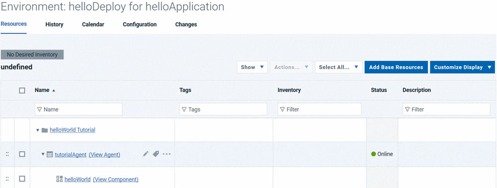
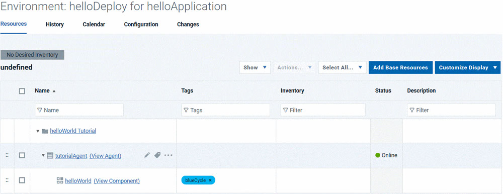

When you create an environment, you map resources to it that define where the parent
application can run deployments.
About this task
An environment is a user-defined collection of resources that identify the components that
can be deployed by the parent application, along with the agents that do the work.
Procedure
-
Define the environment:
-
On the Application: hello Application page, click
Environments.
-
Click Create Environment.
-
Specify the name to be something like helloDeploy.
-
Accept the default values in the other fields in this window, and click
Save.
-
Add the resource group that contains the agent you created earlier to the
environment.
When you set up the agent, you added the agent as a resource to a resource group.
-
Click the environment name.
-
Using the Resources tab for the environment, click
Add Base Resources.
The Add Resource to Environment window shows all
available resources.
-
Select the check box next to resource group that you created earlier,
helloWorld
Tutorial, and then click OK.
When you select the resource group, you automatically select the resources that are associated
with it, such as the agent that you assigned to the group. Selecting an agent-type resource
identifies the location, usually a computer, where deployments can occur.
-
Map the helloWorld component to this agent resource.
-
As you hover the mouse over the row with the agent resource, click .
-
Select the helloWorld component and then click
Save.
Only components added to the parent application are available to be mapped to the
agent resource.
Note: In order for a component to be deployed by an application, it
must be added to the application and also mapped to an agent-type resource. A
component that is added to an application but not mapped to an agent resource,
cannot be deployed by that application. Similarly, a component that is mapped to an
agent resource but not added to an application, cannot be deployed by that
application.
-
Add a tag to the helloWorld component resource.
User-defined tags can identify resources and be referenced in application processes.
-
Click the check box for the helloWorld component.
-
On the same row as the Add Base Resources push button, click .
The
Add Tag selection is shown in the following figure:

-
In the Add New Tag window, type something like
blueCycle in the Name field, select a color for the
tag, and then click Save.
While you can select any color, blue is a good choice. Applications can be configured to use
resources with a specific tag. For example, a continually running environment might take one group
of blueCycle tagged servers offline to update them, then put them back online
and take another differently tagged group offline. You can also configure a process to deploy all
components with a particular tag.
The finished resource with the
blueCycle tag is shown in the
following figure:

Results
The new environment is displayed on the Environments tab. After the
environment is prepared, you can create the application process.In this lesson, you created an environment and added a resource group to it, then added a
tag to the resource.
On the Resources tab, you have the resource group with your agent
and the helloWorld component.
For more information about creating environments, see Application environments.